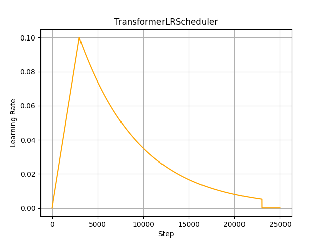

Implementation of the learning rate scheduler proposed in: Attention is all you need.

import math
import torch
import source.LR_Scheduler.lr_scheduler_base as LRScheduler_Base
The learning rate is varied over the training according to the formula:
Thus, the learning rate is increased linearly for the first training steps, and decreased thereafter proportionally to the inverse square root of the .
class TransformerLRScheduler(LRScheduler_Base.LearningRateScheduler):
Args:
optimizer (torch.optim.Optimizer): init_lr (float): peak_lr (float): final_lr (float): final_lr_scale (float): warmup_steps (int): hold_steps (int): decay_steps (int): def __init__(self,
optimizer : torch.optim.Optimizer,
init_lr : float,
peak_lr : float,
final_lr : float,
final_lr_scale : float,
warmup_steps : int,
decay_steps : int) -> None:
Determines the current state according to the current step.
def _decide_stage(self):
One step forward in the learning rate schedule.
def step(self):